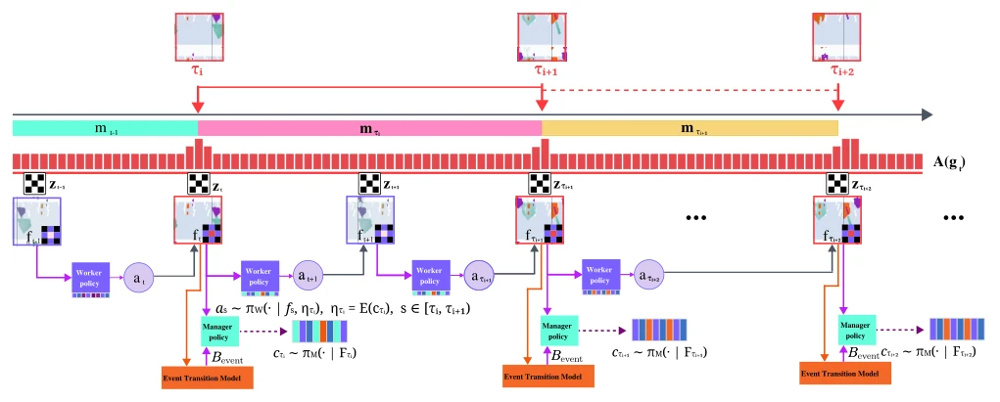
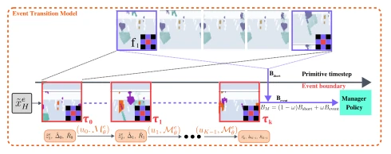
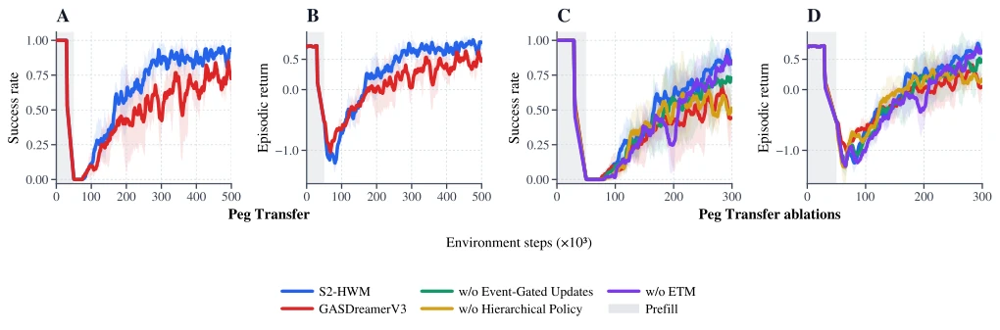
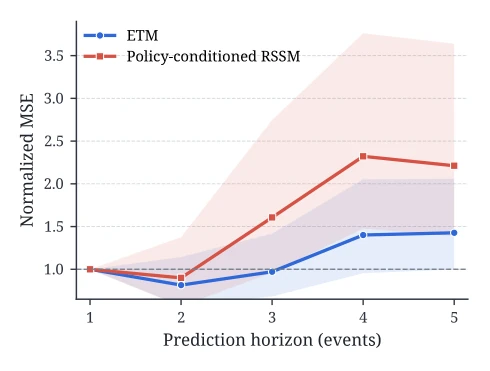
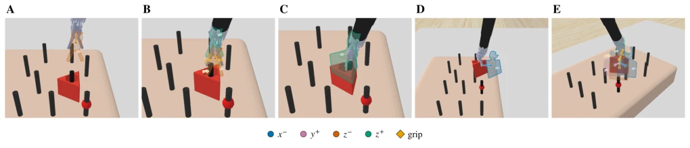

S2-HWM: Sparse Event-Structured Hierarchical World Model for Long-Horizon Surgical Robot Manipulation
Shuzhe Zhang, Xin Zhu, Yinling Qian, Qiong Wang abspdf
论文点评Review
这篇论文给长视界手术机器人学习带来了一剂“稀疏奖励”的强心针。S2-HWM 的核心逻辑很清晰：既然原始步长太碎，那就学会自己找“大事发生”的节点。它不再死板地按固定时间切分任务，而是从隐空间里“嗅”出事件证据，让高层经理（Manager）只在关键时刻换目标，底层工人（Worker）则负责执行。这种“按需更新”的机制比那些死守固定时间窗口的传统分层强化学习（如Option-Critic Bacon et al. 2017）要灵活得多。不过，这招也不是万能的，它依然依赖仿真环境（SurRoL），在真实手术场景中，视觉噪声和触觉反馈的复杂性可能会让那个“稀疏事件门控”失效。此外，虽然它声称不需要语义标注，但实验分析显示其隐变量确实对应了语义阶段，这是否意味着它只是“无监督地学到了有监督的知识”，还是真的实现了完全解耦，值得深究。总的来说，这是一个在理论架构上非常漂亮，但在落地鲁棒性上仍需验证的“聪明”模型。
This paper injects a strong dose of "sparse reward" into long-horizon surgical robot learning. The core logic of S2-HWM is clear: since primitive steps are too fragmented, learn to find "big event" nodes on its own. It no longer rigidly splits tasks by fixed time, but "sniffs out" event evidence from the latent space, letting the high-level Manager (Manager) change goals only at critical moments, while the low-level Worker (Worker) is responsible for execution. This "update-on-demand" mechanism is much more flexible than traditional hierarchical reinforcement learning that sticks rigidly to fixed time windows (e.g., Option-Critic Bacon et al. 2017). However, this approach is not a panacea; it still relies on simulation environments (SurRoL), where in real surgical scenarios, the complexity of visual noise and haptic feedback might cause the "sparse event gating" to fail. Furthermore, although it claims no semantic annotation is needed, experimental analysis shows its latent variables do correspond to semantic stages; whether this means it merely "learned supervised knowledge in an unsupervised manner" or truly achieved complete decoupling is worth deep investigation. Overall, this is a "smart" model that is very elegant in theoretical architecture but still requires validation in terms of deployment robustness.
研究动机Motivation
长视界手术操作面临的核心痛点是“稀疏奖励”与“动态交互”的矛盾。手术任务（如抓取、传输、放置）往往持续时间长，且关键的状态转换（如接触、释放）发生在不规则的时间点。现有的世界模型（World Models）如Dreamer系列（Hafner et al. 2019, 2020, 2021, 2023）通常以原始步长（primitive-step）进行想象，导致任务进度的时间边界在隐空间中是隐式的，难以直接用于高层决策。虽然引入显式阶段结构（如GAS DreamerV3 Lin et al. 2024）能缓解信用分配问题，但人工定义的阶段边界往往无法与状态依赖的交互转换对齐，要么太粗糙导致状态误判，要么太细碎难以预先定义。此外，现有的分层强化学习方法（如Option-Critic Bacon et al. 2017）或基于固定时间间隔的更新策略，无法自适应地捕捉执行过程中涌现的交互变化。因此，亟需一种能从原始轨迹中自动学习稀疏事件证据，并据此动态调整高层目标更新频率的机制，以解决长视界任务中的规划与信用分配难题。
The core pain point faced by long-horizon surgical operations is the contradiction between "sparse reward" and "dynamic interaction". Surgical tasks (such as grasping, transferring, placing) often last long, and critical state transitions (such as contact, release) occur at irregular time points. Existing world models (World Models) such as the Dreamer series (Hafner et al. 2019, 2020, 2021, 2023) typically imagine using primitive steps, resulting in time boundaries of task progress being implicit in the latent space, making them difficult to use directly for high-level decision-making. Although introducing explicit stage structures (e.g., GAS DreamerV3 Lin et al. 2024) can alleviate credit assignment problems, manually defined stage boundaries often fail to align with state-dependent interaction transitions, being either too coarse leading to state misjudgment or too fragmented to be predefined. Furthermore, existing hierarchical reinforcement learning methods (e.g., Option-Critic Bacon et al. 2017) or update strategies based on fixed time intervals cannot adaptively capture interaction changes emerging during execution. Therefore, there is an urgent need for a mechanism that can automatically learn sparse event evidence from raw trajectories and dynamically adjust the high-level goal update frequency based on this, to solve planning and credit assignment challenges in long-horizon tasks.
S2-HWM proposes a hierarchical world model based on sparse event structure, the core of which lies in utilizing "event evidence" learned from raw latent trajectories to coordinate the collaboration between high-level Manager (Manager) and low-level Worker (Worker). The overall process is divided into two time scales: Worker control at the primitive-step scale and Manager decision-making at the event scale. First, the system uses an RSSM based on DreamerV3 to build the raw world model, generating latent features containing random states, deterministic states, and persistent interaction contexts. The key innovation lies in the "Sparse Context Dynamics" module: it predicts candidate context updates and generates soft gating, producing sparse dimension activations as "event evidence" through straight-through binarization (Straight-through binarization). The Manager (Manager) uses this evidence to decide when to update goals: when evidence is accepted, the Manager samples discrete codes and maps them to new latent goals, while the Worker (Worker) executes primitive actions under this goal condition until the next update. Second, to extend the Manager's planning horizon, the system introduces an Event Transition Model (ETM). ETM uses the same event evidence to build variable-length training segments, directly predicting the next boundary's state, duration, and cumulative reward, without recursively expanding intermediate raw states. This design allows the Manager's value-guided (Bootstrap) to cross the limited horizon of raw imagination, achieving long-horizon planning through chained event prediction, while the Worker still maintains primitive-step Actor-Critic learning.

Figure 1: Event-aligned hierarchical execution in S2-HWM. Primitive latent features ft support primitive-step worker actions, while A(gt) denotes the manager-side acceptance rule that maps sparse event evidence gt to accepted manager update points τi. At each accepted manager update point, the manager samples a discrete code ci from Fi = fτi, and its embedding ηi conditions the worker until the next manager update. Dashed ETM paths denote the event-level continuation used in the manager bootstrap; its construction is detailed in Figure 2.

Figure 2: Two-timescale imagination and event-extended manager bootstrap. Primitive-step imagination produces the short-horizon terminal estimate Bshort. Starting from the same endpoint, K ETM transitions predict next-boundary stochastic states, segment durations, and accumulated seg- ment rewards to form the event-level continuation Bevent. Their weighted combination BM extends the manager value target while worker learning remains at primitive-step reso- lution. Boundary observations are shown only for visualiza- tion; the ETM predicts latent states rather than pixels.
实验Experiments
实验在基于SurRoL的PegTransfer任务上进行，该任务要求机器人完成抓取、传输、对齐和释放的长序列操作。基线包括PPO、DreamerV2以及最相关的GASDreamerV3（Lin et al. 2024）。S2-HWM在单次传输任务中取得了98.7%的成功率，显著优于GASDreamerV3的76.0%（提升22.7个百分点），且PPO和DreamerV2完全无法解决该任务。在更具挑战性的“重复传输”和“带扰动传输”测试中，S2-HWM依然保持88.0%的高成功率，而基线模型表现大幅下降。消融实验揭示了各组件的贡献：移除分层策略（w/o Hierarchical Policy）导致性能暴跌至68.0%，证明分层架构至关重要；移除事件门控更新（改为固定步长）使成功率降至80.7%，说明自适应更新优于固定周期；移除ETM则导致长视界规划能力下降，特别是在扰动测试中差距拉大至20.7个百分点。分析还显示，经理的隐代码确实对应了不同的语义阶段（如抓取、提升），且ETM的多步预测误差增长远慢于原始RSSM，验证了其扩展规划 horizon 的有效性。
Experiments are conducted on the SurRoL-based PegTransfer task, which requires the robot to complete long-sequence operations of grasping, transferring, aligning, and releasing. Baselines include PPO, DreamerV2, and the most relevant GASDreamerV3 (Lin et al. 2024). S2-HWM achieved a 98.7% success rate in single transfer tasks, significantly outperforming GASDreamerV3's 76.0% (an increase of 22.7 percentage points), while PPO and DreamerV2 completely failed to solve the task. In more challenging "repeated transfer" and "perturbed transfer" tests, S2-HWM still maintained a high success rate of 88.0%, while baseline models' performance dropped significantly. Ablation experiments revealed the contributions of each component: removing the hierarchical policy (w/o Hierarchical Policy) caused performance to plummet to 68.0%, proving the hierarchical architecture is crucial; removing event gating updates (changed to fixed steps) reduced success rate to 80.7%, indicating adaptive updates are superior to fixed cycles; removing ETM led to a decline in long-horizon planning capability, especially in perturbed tests where the gap widened to 20.7 percentage points. Analysis also shows that the Manager's latent codes indeed correspond to different semantic stages (such as grasping, lifting), and the multi-step prediction error growth of ETM is far slower than the raw RSSM, verifying the effectiveness of its extended planning horizon.

Figure 4: PegTransfer training performance and ablations. Panels A and B compare S2-HWM with GASDreamerV3 through 500k environment steps. Panels C and D compare S2-HWM with w/o Event-Gated Updates (K = 15), w/o ETM, and w/o Hierarchical Policy over a common 300k-step window. Lines show means, and shaded bands show sample standard deviations across three training seeds. Gray denotes prefill.

Figure 5: Normalized multi-event stochastic-state prediction error on PegTransfer. ETM and policy-conditioned RSSM rollouts start from the same posterior stochastic states at event boundaries and are evaluated at matching future boundaries. Each curve is normalized by its own one-event MSE; lines show means and shaded regions show trajectory-level dis- persion. Lower is better.

Figure 6: Worker action tendencies for the post-hoc semantic phases in Table 2: (A) Approach-source, (B) Approach-grasp, (C) Grasp-lift, (D) Place-align, and (E) Release-stable. Colored afterimages and arrows denote empirical world-frame actions, with opacity reflecting their occurrence ratios. They visualize executed actions rather than predicted trajectories.